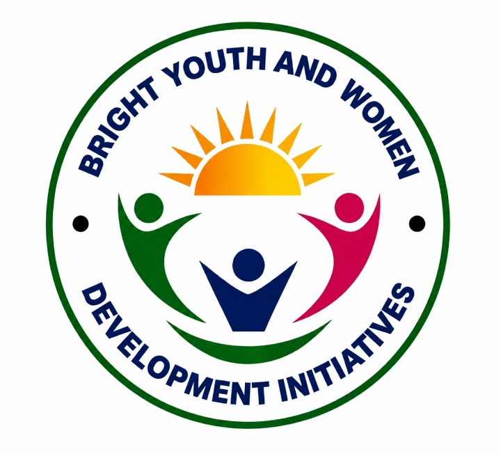

Bright Youth and Women Development Initiative
Bright Youth and Women Development Initiative (BYWDI) is a non-governmental, non-profit organization committed to promoting sustainable development, humanitarian response, and community empowerment.
Learn MoreBright Youth and Women Development Initiative (BYWDI) was established as a community-based humanitarian organization in response to the increasing challenges faced by vulnerable populations affected by conflict, poverty, and displacement.
The organization focuses on providing sustainable solutions through integrated programs that improve community resilience and promote inclusive development.
BYWDI works closely with communities, local authorities, civil society organizations, and humanitarian partners to deliver impactful interventions.
A peaceful, healthy, and self-reliant society where all individuals, especially youth and women, have equal opportunities to thrive.
To improve the well-being and resilience of vulnerable communities through integrated programs in education, health, WASH, livelihoods, and peacebuilding using participatory and locally driven approaches.
Ensuring equal participation and opportunities for all community members.
Promoting transparency, responsibility, and trust in all activities.
Working with communities to design and implement sustainable solutions.
Building the capacity of youth, women, and vulnerable groups for self-reliance.
Ensuring the safety, dignity, and rights of beneficiaries.
Supporting quality education, learning materials and back-to-school campaigns.
Health awareness, maternal care, nutrition screening and referrals.
Water, sanitation, hygiene promotion and cholera prevention.
Vocational training, agriculture support and VSLA.
Conflict resolution, dialogue sessions and social cohesion activities.
Address: Maiduguri, Borno State, Nigeria
Email: ____________
Phone: ____________
Website: ____________